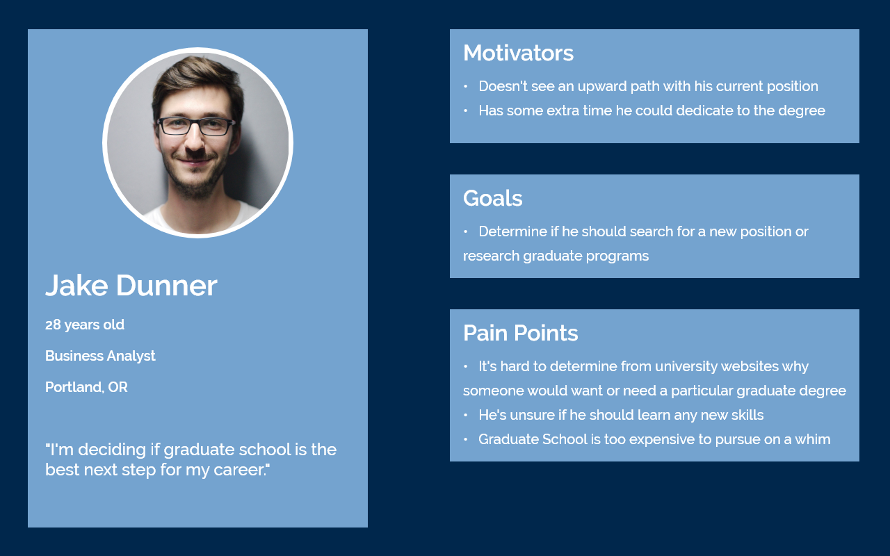
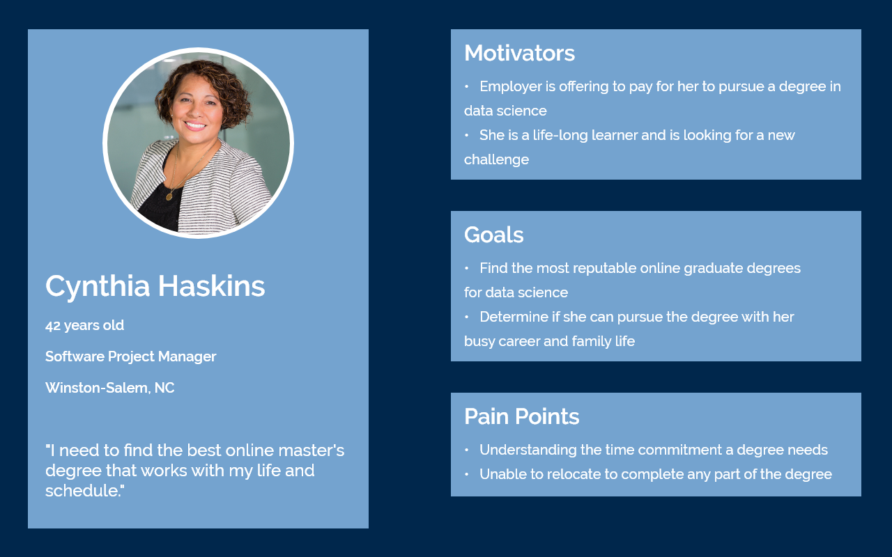
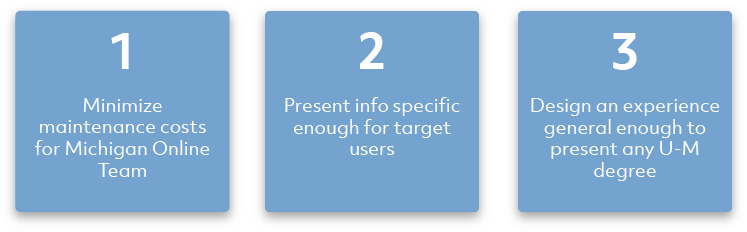
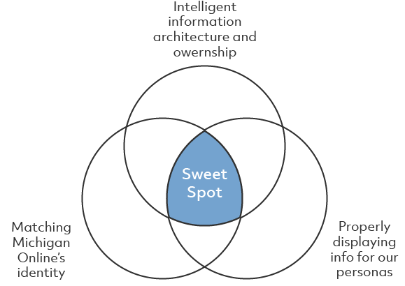

I improved the usability of existing tools and designed the experience of new products. I also helped to conduct user research and assisted with UI design, rapid prototyping, and web-based tool development.
User Experience Design Fellow
May - Aug. 2019

I was as a UX Design Fellow at the University of Michigan's Center for Academic Innovation and most of my work focused on designing and implementing new experiences for their website Michigan Online.
A New Degree Details Experience
The content library on Michigan Online was growing rapidly, and their catalog of online degrees was becoming increasingly popular. Pursuing an online degree from the University of Michigan is a large investment of time and money, and many learners want to do research before making their decision. An improved experience needed to be designed and developed to give learners the detailed information they’re seeking during their research.
Project Timeline
Understanding
Michigan Online Courses already had a detailed page describing their content and purpose for users. However, a similar page did not exist for online degrees listed on Michigan Online, and I was responsible for filling that experience gap.

Competitive Evaluation and Interviews
I conducted a competitive evaluation to better my understanding of how online graduate degrees are advertised and described across the web. I studied online learning platforms such as Coursera to understand their information hierarchy and organization, and other universities to learn how schools promote their own learning materials.
I also organized several informal interviews with stakeholders at Academic Innovation and other schools and colleges across U-M. I couldn’t speak with potential students applying to these U-M graduate programs, due to privacy concerns, so these interviews were key to help me understand our intended users’ needs.
Personas
Using what I learned about our intended users I created two simple personas to help keep our upcoming designs focused on the right tasks and needs.
 Design Goals
Through speaking with stakeholders at Michigan Online together we created three goals for the new Degree Details design:
Mockup Iteration
Throughout the iteration process I focused on three targets for my designs:
Final Product
After multiple mockup iterations my designs received signoff from Michigan Online stakeholders. I was able to incorporate many pieces of Michigan Online’s visual identity in the final product while still creating a new and informative experience for users.
The tab navigation allowed for a shorter, more scannable page for users and presented information organized with our personas in mind.
The colored stripes and bulleted lists made for modular sections that met our goals of being specific enough for users but general enough to work for any degree.

Current State
Once the final design iteration above was approved by Academic Innovation’s Associate Vice Provost and the rest of the Michigan Online team I was tasked with implementing the front end of the page.
The Degree Details page we designed is currently live on Michigan Online, and is available to the thousands of members of the University of Michigan community. To date, there are nine online degrees available on Michigan Online, and that number is expected to keep growing!